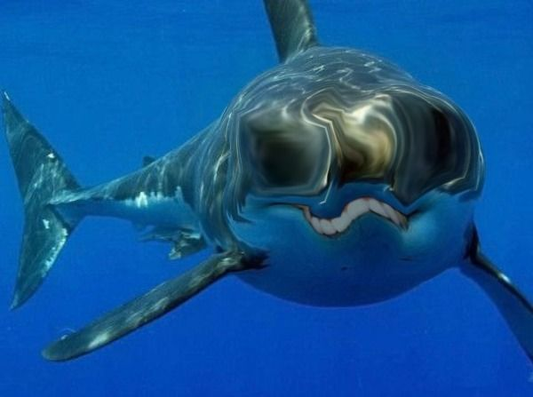

{kind=link}
ABOUT US
What Are Smoob Sharks?
The Smoob Shark is a rare species of shark. They now rank few in number, boasting only a few thousand members in the wild, and even fewer in captivity. Some key features of Smoobs that distinguish them from other sharks is their unusual teeth, and uniquely deep grooves in their body. This interesting species of shark communicates exclusively in Morse code through graceful motions of their fins. They are also highly intelligent. It is said that if you inscribe your phone number onto the side of a Smoob, it may call you back and ask you for spare sugar.
History
Smoobs are a species with a rich and diverse history. Although the first found documentation of a Smoob dates  back to the 18th century, there have been discoveries of Smoob fossils alongside those of dinosaurs. It is believed that the Smoobs have played a pivotal role in the formation of ancient human civilization, though there is no physical evidence of this.
As for the history of the S.S.P.O. (Smoob Shark Preservation Organization), our organization's history spans back to the late 20th century following the 23rd annual International Smoob Hunting Tournament of 1988. Our founder, Smoobicus Smoobson, created this organization on July 11, 1988 after the Smoob population dropped below three thousand.
Our Mission
The purpose of the esteemed S.S.P.O. is to preserve the dignity of the Smoob Shark. Smoobs worldwide are being hunted for their prized ivory teeth, and their fins are farmed for the popular delicacy, Smoob Fin Soup. Global warming and climate change are also factors that have drastically reduced the Smoob Shark population. While it is illegal to personally own a Smoob in nearly every country save for about twenty, Smoobs are still being captured and illegally traded as pets. Our mission at the S.S.P.O. is to recover abused Smoobs in captivity and relinquish them back to Mother Nature, where they are free to chug as much ranch as they wish without abandon. We must protect the Smoobs before it is too late: the time to take action is NOW.